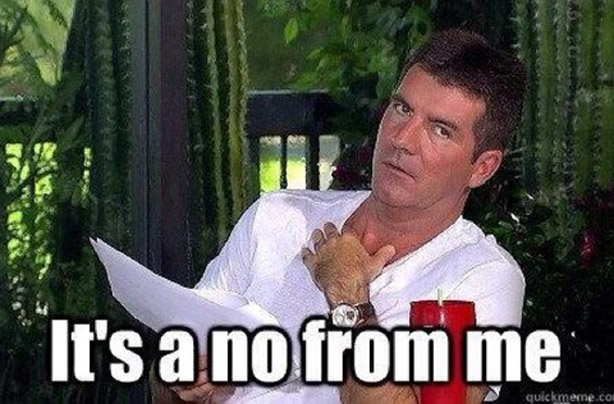
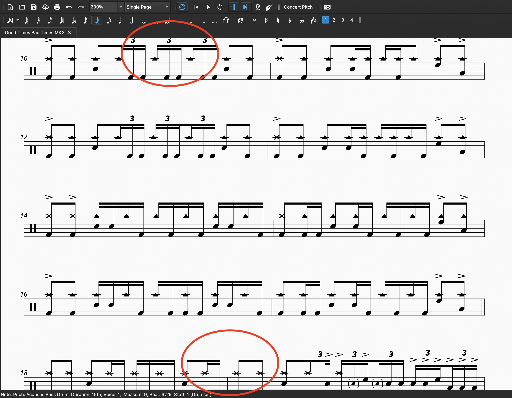
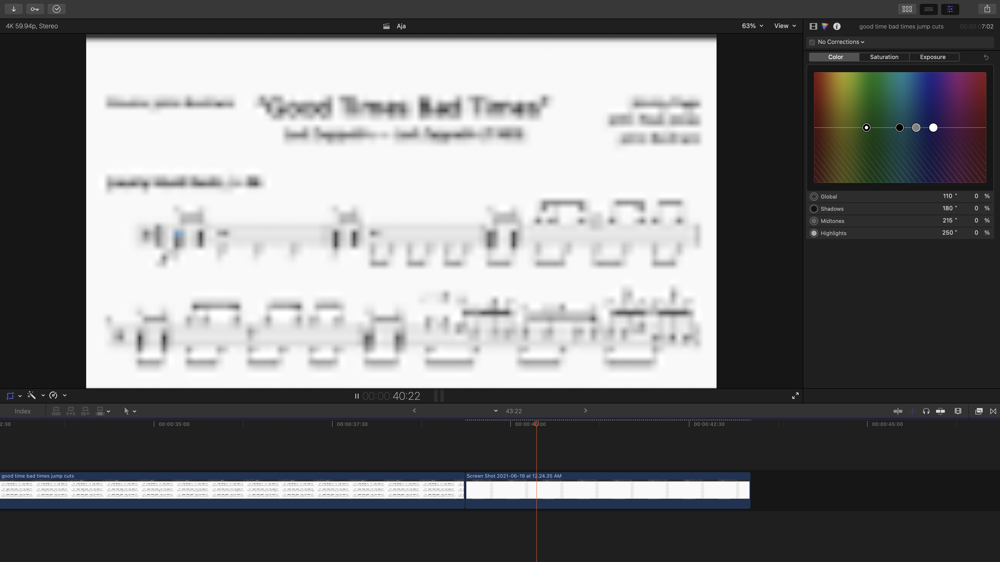
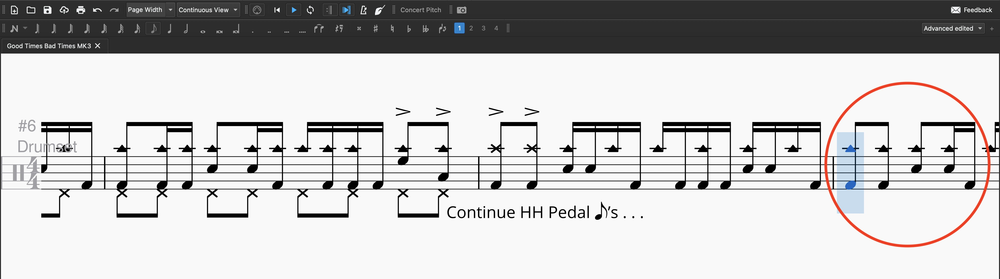

Sheet Music Play–Though Experiments
Posted on June 27, 2021

I really have a deep appreciation for well–engraved sheet music. I know sheet music is supposed to have a very utilitarian purpose more than anything else, but there’s something very artful about good sheet music, and I’m not talking sheet music that’s purposefully meant to be a work of art. Without a doubt, there’s also something very… off–putting about sheet music that crams notes on top of one another in a nightmarish web.
One thing I’ve been wanting to do for some time is to sync up a sheet music playthrough with audio of a performance. These kinds of video have become vogue within the last five years, especially on channels like Vic Firth’s:
These videos are invariably ambitious; most of the time, static screenshots of a PDF are added to a video. Sometimes I see a simple playhead animation scrolling over the notes. But I’ve never seen actually someone take footage of notation software navigating a score and sync it up with some audio. I decided to give it a shot myself.
I picked “Good Times Bad Times” as the test song, since it was the first song I ever shared on the site. As I wrote almost a year ago, the tune is barely more than two and a half minutes long, and I thought using something on the shorter side would make things a little easier.
First things first, I had to make a video of the sheet music. While Finale and Sibelius have “export as video” built–in, MuseScore does not. According to this thread, there are no plans to implement such a feature. Maybe someday the developers will change their minds, but considering that MuseScore has been around for over ten years and it still doesn’t have working double repeats, I’m not optimistic.
The thread mentioned a convoluted work around, which is really the story behind MuseScore’s shortcomings. The solution here is to upload your score to MuseScore.com, use your account to upload the score to YouTube, log into the proper YouTube account, and then download the video.
The thread also mentioned simply using screen recording software to capture the play–through, so that’s the route I went with. The next order of business was getting the capture to look good. I had to do some tweaking with the zoom level to keep parts of the score from getting chopped up:
Once that was sorted out, I started doing some recording, which led me to another problem. I must preface this by admitting that this is a bit more abstract… but see if you can spot the problem after watching this short video:
My issue is that, once things get going, your eyes are stuck staring at the bottom of the screen — it’s impossible to read ahead. To what extent this annoys other musicians is up for debate… but it sure annoyed me. I typically glance ahead when I navigate sheet music, although, in the case of a transcription, the reader may just focus on what’s being played note for note.
In any case, I also felt like this was a waste of space since measures that have already been read are covering 75% of the screen.
Ideally, I would like there to be at least one upcoming system underneath the notes being played. So the second approach was to switch the score to “Single Page” view, which lays out the sheet music in one giant, unending page. After some adjustments, I needed to figure out a way to smoothly scroll the page down during playback.
Unfortunately, I haven’t figured out how to do that yet, and I’m not sure I will. Scrolling manually with a mouse was out of the question, namely because it didn’t look good. I tried to find out a way to scroll programmatically using something like Automator or Apple Scripts, but I just couldn’t get it to work. MuseScore doesn’t let you scroll with the keyboard, so that’s not an option either.
For a moment, I thought I had a solution with a third approach: record the whole page at once and then use keyframes to basically move a mask downward:
It looks ok, but because of the zoom that’s needed, the notes look a bit fuzzy, even at 4K. Moreover, I would like it to keep scrolling down until the transcription ends, and with this approach, I would need to zoom out far enough to include all of the score in one shot, before zooming in a ridiculous amount in Final Cut:
That wasn’t gonna work
The fourth approach was to use Single Page View and do some editing to keep the lines being played in the center(ish) of the screen:
I only did the first 30 seconds of the tune because I couldn’t really find an efficient way to get it done for this method. In Single Page mode, MuseScore will put the next line of music into view, but that’s it — the software won’t move that system into the center of your screen. And ultimately the editing was way too time–consuming. Having to pause playback, reposition the score, and resume at every system is bad enough, but having to edit all that out?
After all that work, I’m not sure I’m even happy with the result here, as the constant jumps are quite disorienting.
So at this point, I decided that an acceptable comprise would be to have four systems in view at a time. As you get towards the end of each group, your ability to read ahead does go down, but I think it’s good enough. In addition, the groups of four make it easier to anticipate when the sheet music will jump around.
I expected this to be quite tedious; at first, it seemed like I would have to let the score play through four lines, pause playback, position the next group of lines, and then resume play before editing all those stops out after the fact. However, I eventually had an “ah–ha” moment: I can just cut the height of the pages in half, so only four systems fit on a page. Once MuseScore gets to the end of a page, it jumps to the top of the next one, so the playhead is at the top of the screen again.
This was method number five, and it was the method I went with. I had to make a few edits to the score, and do a bit of cropping in Final Cut, but all in all, it wasn’t terribly tiresome.
Ostensibly, I could get any result I wanted if I was patient enough, but if I want to do a video like this for other transcriptions, I would need to keep the process fairly expedient. I can’t afford to invest 12 hours of tedious, pixel–perfect editing for each of these songs.
To conclude, the best balance of what I want and ease of creation is to cut the pages in half. Here is the final result:
One thing I have to say, this method does help out in allowing me to surreptitiously correct timing issues. With the scrolling method, I don’t think there’s any way to hide such edits, since it would cause the scrolling effect to abruptly speed up or lurch around periodically.
ICWYW, I had to make about 9 edits to the video to keep it synced up. For the most part, Bonham was playing slightly behind the beat, unsurprisingly. If I did my job well then hopefully these edits are tough to spot.
For those who are familiar with MuseScore, you may be wondering if I messed around with another mode called “Continuous View” that extends the music to the right forever. I did (so that’s six attempts in total), but as I just didn’t dig the look of it; again, there’s a bit of wasted space for most of the screen. Moreover, I was having to deal with some weird formatting stuff, and MuseScore would also cut parts of measures off even as they were being played:
So for the umpteenth time, that wasn’t gonna work.
I may cook some more of these up in the future. My longer transcriptions are probably gonna be too much to deal with. That being said, songs that were recorded to a click may not be as much of a pain, since I won’t have to fix timing issues nearly as often, if at all. Maybe I’ll go through them in the order I first shared them on the site. I think they’ll go right to YouTube; I don’t feel like making a blog post about each one.
BTW, I’m taking next week off to touch up a few things on the site. In the meantime, have a happy fourth.